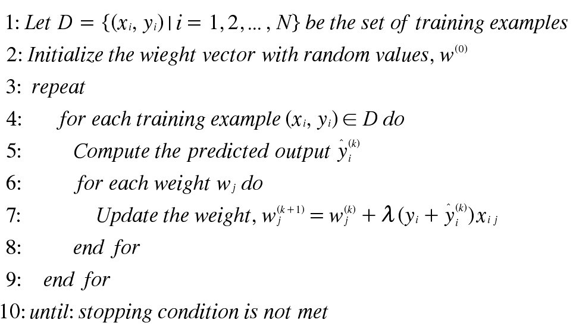
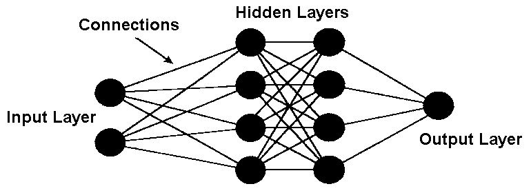

Aritificial Neural Network Classification
Introduction
The stufyd of artificial neural netwroks (ANN) was inspired by attempts to simulate biological nerual systems. The human brain consists primarily of nerve cells called neurons, linked together with other neurons via strands of fiber called axons. Like the human brain, the classification of Artificial Neural Networks works similar. An ANN is made up of neurons. These neurons are arranged in layers with each other neuron by various weights. Like a human brain, the ANN classification stragtegy has to learn the model before applying it to the test data. Completely the opposite of KNN. By feeding in the data, along with desired inputs and outputs, the ANN model can train itself to by adddusting the weights between each one of its neurons.

Perceptron
Introduction
A perceptron consists of two types of nodes: input nodes, which are used to represnt the input attributes, and an outputnode, which is used to represent the model output. The nodes in the neural network architecture are commonly knon as neurons or units. In a percptron, each input node is connected via a weighted link to the output node. The weighted link is used to emulate the streght of synaptic connection between neurons. As in bilogicial neurla systems, training a perceptron model amounts to adapting the weights of the links until they fit the input output relationship of the underlying data.
During the training phase the weight parameters w are adjusted until the outputs of the perceptron become consistent with the true outputs of the training exampes.
Algorithm
Multilayer Artificial Neural Network
A Multilayer Artificial Neural Network has more complex structure than that of a perceptron model. It may contain serveral intermediary layers between its input and output levels. These hidden layers would also have weighted connections between nodes.
Benefits
* Can handle redundant reatures buecause the weights are automaticallly learned during the training step.
* It can escape local minimum problem by adding a momentum term
Drawbacks
* The weights and biases need to be initialized if the algorithm is to work properly
* Noise has to be removed
* Training examples with missing values need to be removed or replaced with most likely values
* Most times ANN's converge to a local minumum unles sufficiently accounted for